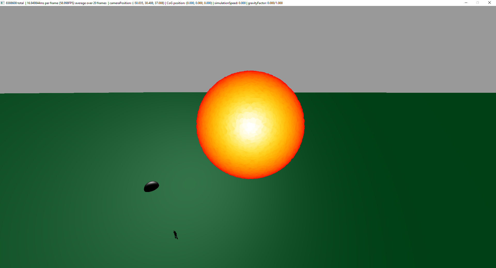

The source code for this can be found on Github.
I developed this particle system in Visual Studio on Windows. A zip of the compiled executable and supporting files can be downloaded here.
Features
3 primary simulation dynamics - "Free Mode", "Sunlauncher Mode" (a magic spell), and "Water Mode"
Context - The water simulation contains a pipe to shoot the water, as well a silhouette person for scale reference (as the sim scale is rather huge)
Full 3D user-controlled camera (WASD, up/down, mouse control)
Visible in any video below
Particle-obstacle interactions besides the ground
In the water simulation, the gravity center acts as an obstacle for the water
Visible in the water hose video at time 0:15
In all simulations (but noticeably in the free mode sim) there's a 10,000x10,000 bounding box obstacle bounce off of
Every particle has a simple circle texture applied, with absolute transparency outside the circle's edges. Because I'm
using GL_POINTS to render the particles, they would otherwise render as opaque squares.
A close-up (paused) view of particle can be found in the water hose video at time 1:04
All benchmarks - I easily ran ~8 million (2^23) particles at 60FPS on my GTX 1070.
The submitted systems have the number of particles hardcoded to 2^23
I also found that I could 16M (2^24) at 60FPS. At 32M the framerate finally tanks.
Performance, number of particles, and other info is displayed in the status bar of every video and image.
Continuous mouse-based user interaction with the system(s)
Only "Free Mode" and "Water Mode" allow this interaction. When the user clicks, a force is applied relative to that point to all particles.
This is readily apparent in any free mode video, or in the water hose video around 0:15
SIMD implementation - The core of the particle system is a compute shader, running massively in parallel on the GPU.
Performance notes are towards the bottom of the page
Simulations
Water Hose/Cannon
In this simulation water particles come gushing out of a massive pipe. Next to the side of the pipe is a silhouette representing an approximate person's height.
This is the only simulation where particles collide with the center-of-gravity sphere, which can be moved with the mouse. Force can still be applied with it for interesting
effects. This is the simulation I spent the most time tweaking the behavior of to get it just right. Video:Water Cannon
"Sunlauncher" Magic Spell
This simulation is of a magic spell that allows you to launch a miniature sun. Upon reaching the ground, this miniature sun explodes into millions of particles.
These 'bits of sun' then gradually cool until they disappear altogether. The sun can be launched from the camera's position using the "g" key. Video:Sunlauncher Magic Spell

Free Mode
This abstract simulation mode shows off the absurd number of particles involved in the system. The particles are attracted a 'center of gravity' point when the
user clicks. The force applied when doing so can be scaled with the +/- buttons as described in the program's usage. This was the mode I used while getting
the compute shader for the system up and running.
This particle system is based on OpenGL (with a GLSL compute shader). SDL is used to interface with windows. SDL_Image is used to load textures. Glad as an interface
to OpenGL. All code was written in Visual Studio on Windows.
Challenges Encountered
The main challenge was of course getting the OpenGL compute shader running. Even once it was running, there were a variety of challenges stemming from how
massively parrallel the compute shader is. All data interfacing (to/from) the compute shader is done through Shader Storage Buffer Objects.
Initialization - The shader storage buffer objects (SSbo's) used to store data in the compute shader (and to communicate with my C++ code) must be initialized in C++ code.
For some time, I was initializing all particles' positions, colors, and velocities randomly in C++. However, with larger numbers of particles (~ >8M), this led
to significant load times as the CPU completed iterating through all particles. I solved this by moving the detailed initialization into the compute shader. The C++
now only zeros out the SSbo's.
Spawning - Due to the massively parrallel nature of the compute shader implementation, I decided not to spawn particle how we discussed in class. Doing so what
have required a shared common state (number of particles to spawn) across all instance of the compute shader. Properly accessing this required locks and atomic
operations, which significantly slowed down the simulation. So, the particle spawning seen in the water hose mode is purely stochastic.
Counting the number of particles - For much the same reason as the issue discussed above, I did not end up using a counter of how many particles
are actually alive at a given moment. This would require shared state, thus locks, and was thus was slow. Moreover, the number of particles is rather consistent, and
seems to have no impact on framerate. In free mode, all particles are always rendered. In water mode, the stream reaches a relatively steady state. In sunlauncher mode,
all particles are rendered in the ball when launching. After exploding, some fade, but again, this has no noticeable impact on performance.
Performance Notes
I did these tests only on my personal system, sporting a GTX 1070, an AMD-FX 8350, a 8GB DDR3 RAM.
With no effort put into optimization, simply seeing how many of the spheres I used in my checkin I could render, I could run about 33,000 @ 30FPs, or twice as many
if I used a cube model instead of the sphere model. This was without batched draw calls and without any parallelism.
After I switched to using a compute shader (SIMD) with a work group size of 128, using GL_POINTS and batched draw-calls, I could run >=8.3 Million @ 60FPS.
The framerate finally got inconsistent, ranging between 30-45 FPS, once I increased the number of particles to ~33 million (2^25).
In the compiled executable for turnin, the only way I'm aware of to make the framerate drop is by moving the camera very close to the 'sun' in sunlauncher mode.
This is likely because all 8 million particles are in a relatively small sphere.